01
這堂課要學會什麼
看懂模型從資料學到規律的流程，並判斷預測值的意義。
記住：能區分概念、完成簡單預測、說出限制。
查看第 1 頁投影片
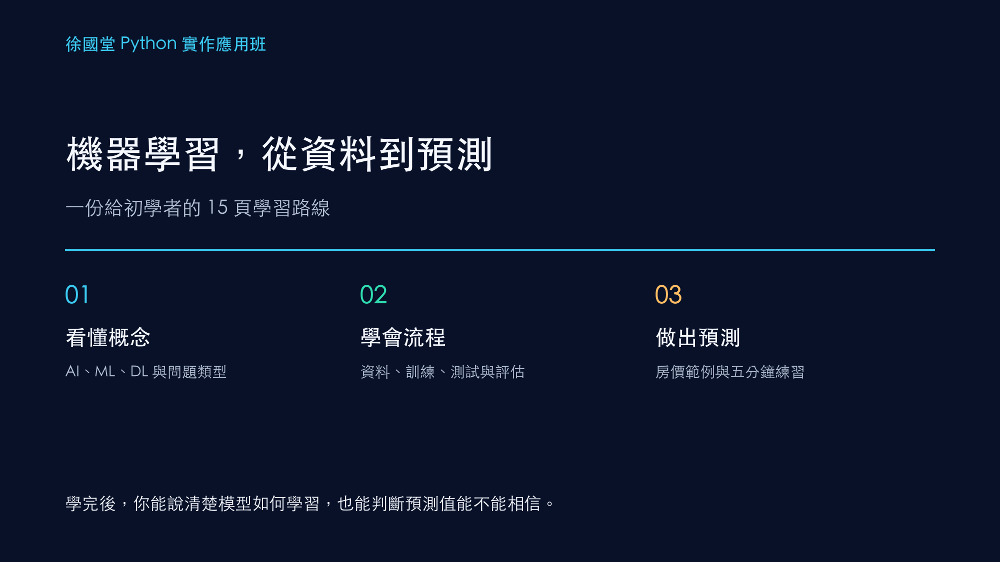
用同一個房價例子，依序弄懂概念、資料、訓練、測試與預測。每一頁只回答一個問題。
先弄清楚機器學習在做什麼。
看懂模型從資料學到規律的流程，並判斷預測值的意義。
記住：能區分概念、完成簡單預測、說出限制。

先提出問題，再整理資料、訓練、檢查，最後預測。
記住：請先記住順序，後面的名詞都能放回這條路線。
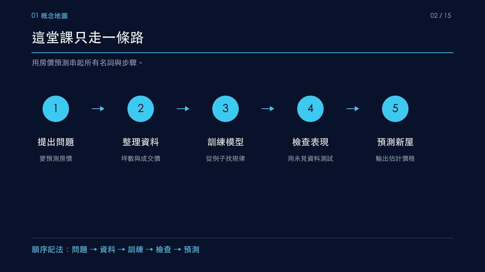
AI 包含 ML，ML 包含 DL。生成式 AI 描述產生文字或圖片等內容的任務。
記住：生成式 AI 不是固定的第四層；目前常見系統多使用深度學習。
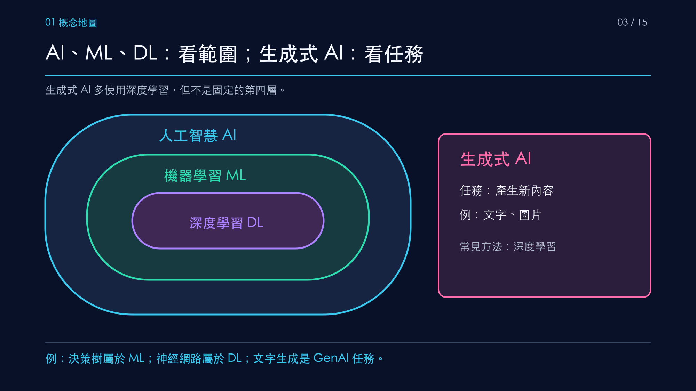
傳統程式由人寫判斷規則；機器學習用帶答案的例子調整模型。
記住：本課聚焦監督式學習。
跟著同一個房價例子，完成資料到預測。
分類預測類別；迴歸預測數值。本課用房價迴歸做主例。
記住：房價是數值，因此屬於迴歸。
坪數是輸入特徵 X，成交價是答案或標籤 y。預測新房屋時只有 X。
記住：請指出一筆資料中哪些欄位可在預測當下取得。
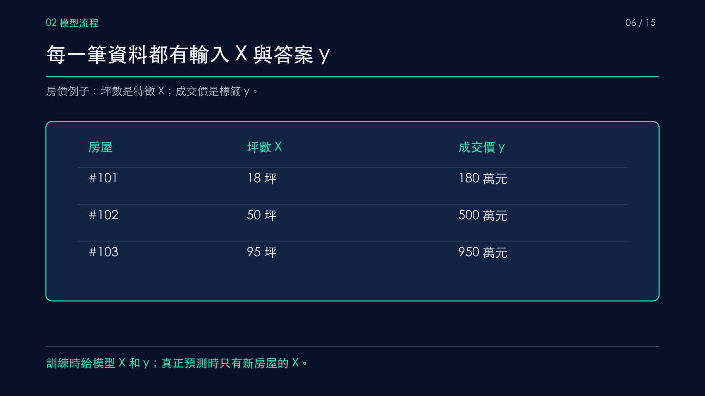
訓練資料用來學習；測試資料留到最後檢查新資料表現。
記住：測試資料的答案不能提前參與訓練。
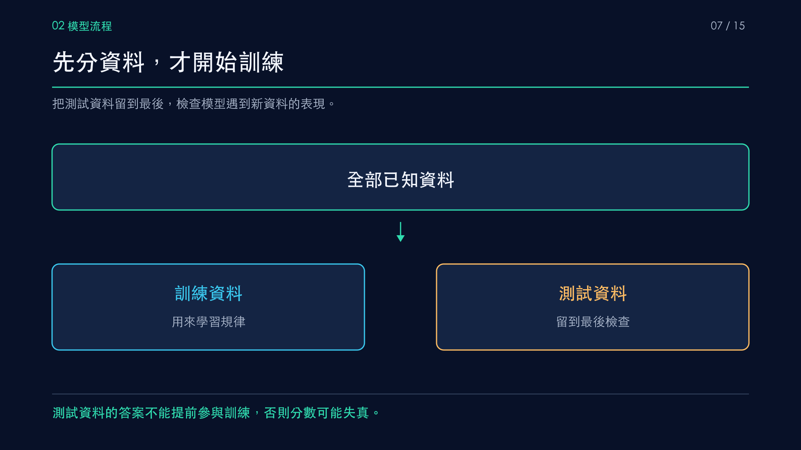
輸入資料、得到預測、比較答案、調整參數；反覆執行。
記住：訓練誤差變小，仍須用測試資料檢查。
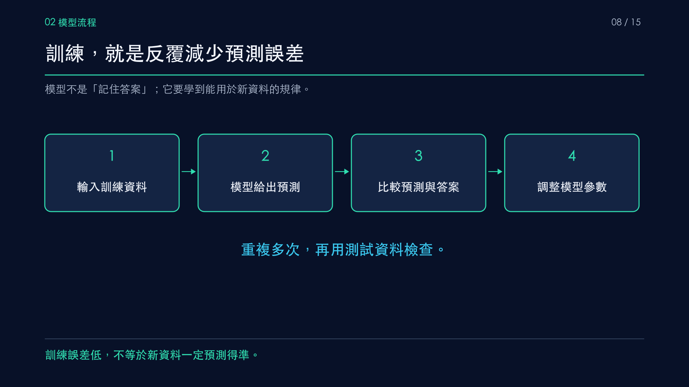
狗的照片被預測成貓 80%、狗 20%。比較正確標籤後，模型調整參數。
記住：這是單筆資料的機制示意。
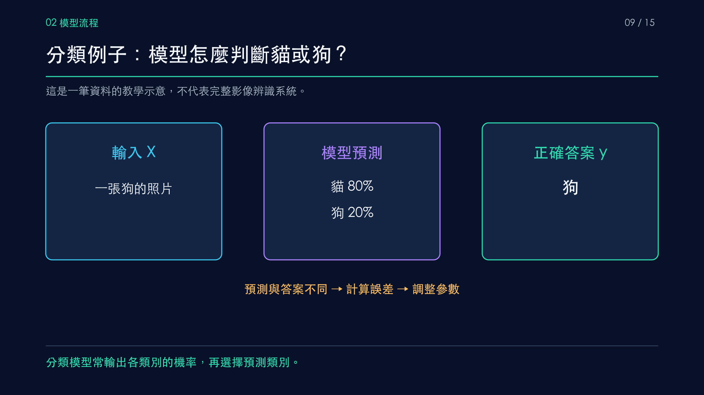
用六筆房價資料畫散佈圖，再用示意直線 y = 10.2 × X − 15 估計價格。
記住：直線不必通過每個資料點。
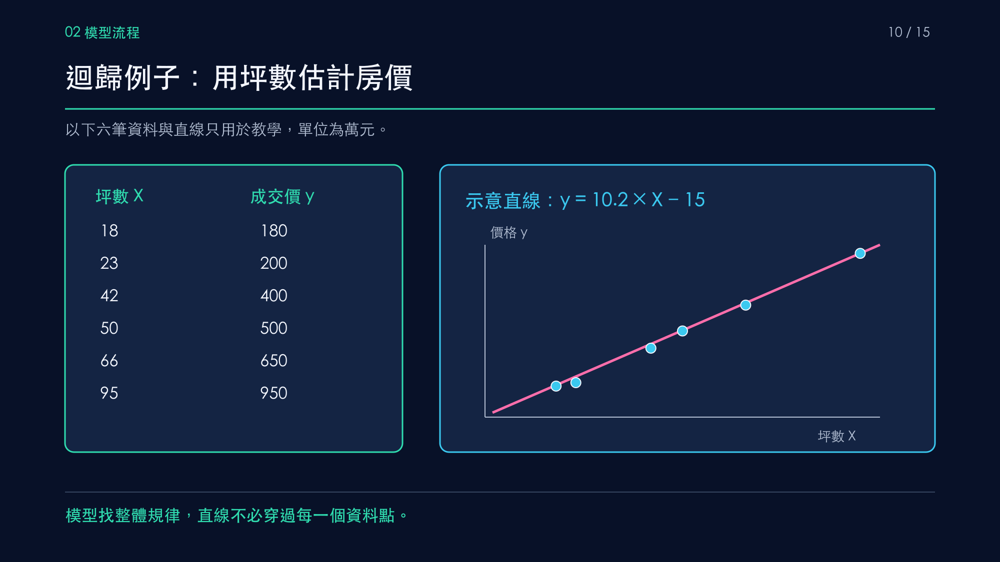
分類可先看正確率；迴歸可看平均絕對誤差。兩者都應在測試資料上檢查。
記住：訓練分數好、測試分數差，可能過度擬合。
房價還可能受地點、房數和屋齡影響；地點通常需要編碼。
記住：新增特徵是否有幫助，仍要用測試資料驗證。
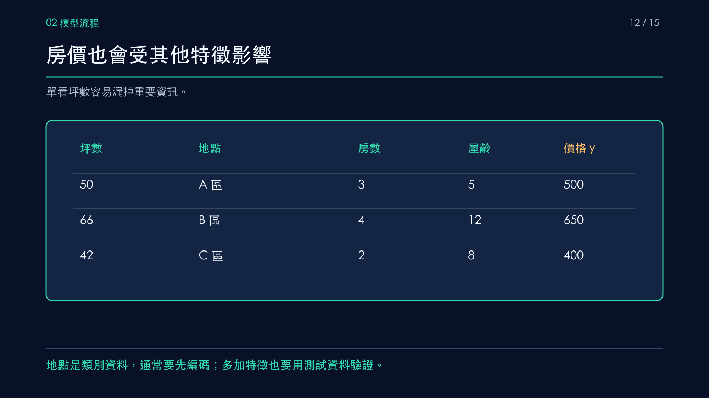
先用 60 坪示範：把新房屋坪數代入單特徵模型，得到 597 萬元。下一頁換你預測 72 坪。
記住：預測值是估計，不是真實成交價。
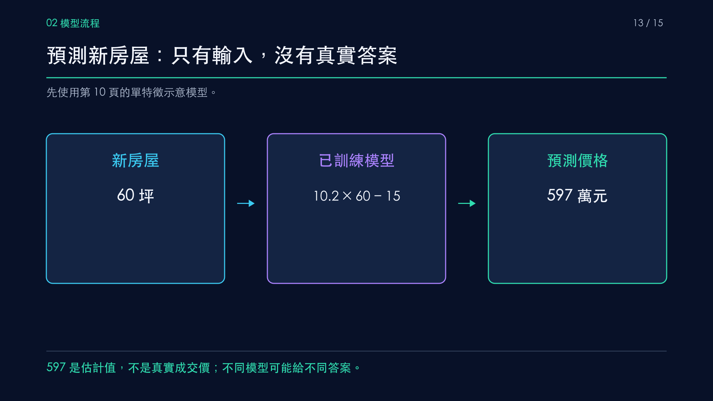
自己算一次，再檢查答案與限制。
先估計 72 坪房價，再在 Colab 執行 x = 72、y = 10.2 * x - 15、print(y)。
記住：想想自己的估計與模型輸出為何不同。
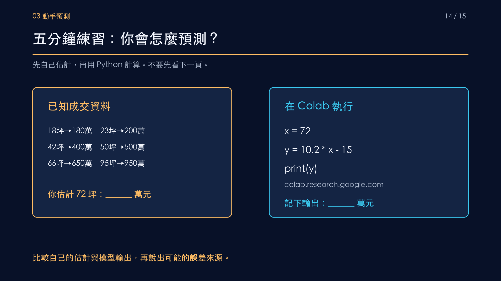
模型輸出 719.4 萬元。確認特徵、標籤、測試資料與預測限制。
記住：這個公式只看坪數，不能當作實際估價。
到 實戰專案目錄 選一個迴歸、分類或分群題目。
到 名詞解釋互動教材 操作資料分割、特徵工程與評估動畫。主講義先掌握流程即可。